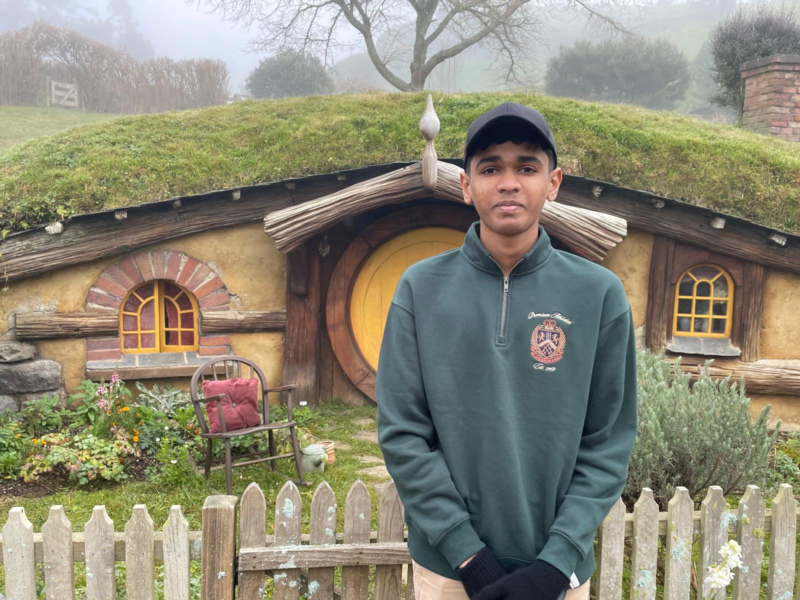

I'm Johan Abram

About me:
I'm 15yrs old and I'm from Auckland, New Zealand. I'm a yr 11 student in Western Springs College.
I like to play badminton and its the most fun sports I have ever played. I also like to play TPS online games like
fornite, Marvel Rivals, free fire, Overdox, or i'll just listen to music. My favorite artists are The Weeknd,
Kendrick Lamar, New jeans and SZA. I take Badminton lessons every Saturday and Sunday
and i work as a librarian in my school.